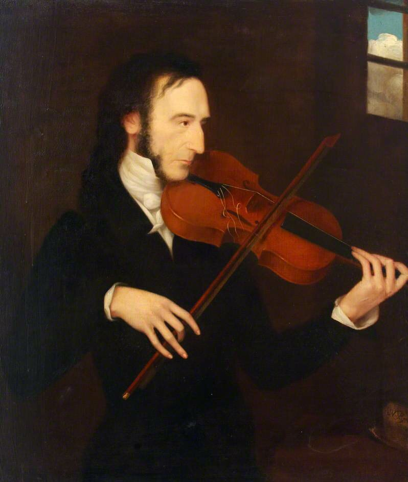

Пик славыВ 1820-х годах Паганини приобрёл широкую известность в Италии. Его концерты привлекали внимание любителей музыки и профессиональных музыкантов. В 1828 году он отправился в Вену. Затем выступал в городах Германии, Париже и Лондоне. Гастроли способствовали распространению его славы по всей Европе. Публика восхищалась его способностью исполнять чрезвычайно трудные пассажи, стремительные гаммы, двойные ноты и виртуозные вариации. Из-за необычной внешности и поразительной техники вокруг музыканта возникали легенды. Так появилось прозвище «Дьявол скрипки».  Никколо Паганини — скрипач, покоривший Европу Его виртуозность изменила представление о возможностях скрипки |